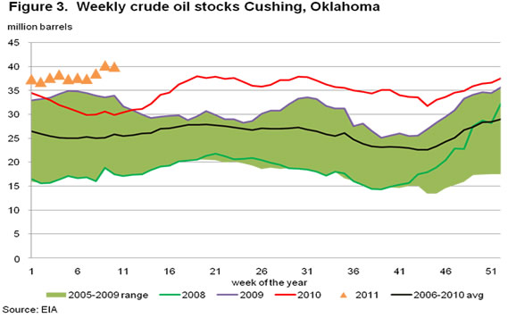
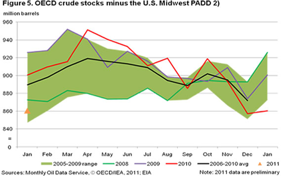
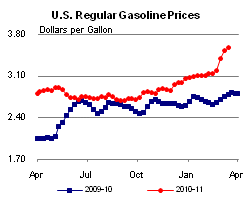
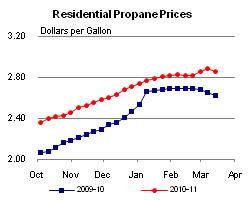
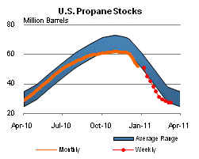

Released: March 16, 2011
Next Release: March 23, 2011
How quickly can the market access commercial crude oil inventories?
Amid rising concerns about the risk of a prolonged disruption in Libyan oil exports, crude oil inventories in Europe and elsewhere warrant close scrutiny from market participants. The loss of Libyan crude oil supply will likely be partly offset by two factors: on the supply side, higher exports from Saudi Arabia and other producers; on the demand front, a temporary reduction in Asian consumption following the devastating earthquake and tsunami in Japan. Even so, the loss of Libyan supply is likely to draw down European stocks, at least temporarily, given the expected lag in alternative supplies. On the other hand, market participants might take comfort from the fact that any stock draw will come from a high inventory base. Commercial liquid fuel stocks in Organisation for Economic Co-operation and Development (OECD) countries surged in 2009 and most of early 2010 as a consequence of the financial crisis and attendant demand dip (Figure 1), culminating at an all-time high of 2,793 million barrels for total liquid fuels in August 2010 and 1,043 million barrels for crude oil in April 2010. World consumption has bounced back since then to above pre-crisis levels and the excess inventory has shrunk, but stocks remain high by historical standards. As of January 2011, the International Energy Agency estimated total OECD commercial liquid fuel inventories at 2,695 million barrels, 17 million barrels above the January average of the last five years. Preliminary January 2011 crude oil stocks had slipped to 960 million barrels (Figure 2), 3 million barrels below the five-year average, but remained high in demand cover terms, while refined product stocks were significantly above average. But the comfort of that safety cushion needs to be placed in context.
Detailed oil inventory statistics are provided weekly by the United States and Japan and monthly by other OECD members. Saudi Arabia and several other non-OECD countries also provide monthly figures, which are made available through the Joint Oil Data Initiative (JODI) run by the Riyadh-based International Energy Forum. It is easy to see why oil traders like to take their cue from those reports, and, most of all, from the timely U.S. weekly surveys. Under the best of conditions, inventory data provide a useful snapshot of supply/demand balances. Stocks build when production exceeds consumption or draw when the reverse is true. In a well functioning market, higher inventories provide a margin of comfort, letting the market cope with unanticipated supply disruptions or keep up with faster-than-expected demand growth. Historically high U.S. crude oil stocks in the last two years have inflated OECD aggregates and are the main reason why global crude oil stocks look so high. However, several factors currently undermine the usefulness of U.S. and OECD stock statistics as a market signal and an indicator of global oil fundamentals.
First, OECD oil statistics were most valuable when the OECD held a strong lead in world oil consumption. OECD economies still account for the majority of global oil demand, but their lead is fast narrowing. The U.S. Energy Information Administration estimates that the OECD share of global oil demand fell to 53 percent in 2010, from 62 percent ten years earlier. Long-term projections suggest non-OECD oil consumption will surpass the OECD around 2019 and keep rising, reaching 56 percent (63 million barrels per day) of the world total in 2035. Non-OECD economies already surpass the OECD in total energy use. That faster pace of oil demand growth in non-OECD economies is made all the more meaningful by the fact that market signals, which generally drive oil supply, demand and inventories in the OECD, may be distorted elsewhere by subsidies or other forms of government intervention. Emerging non-OECD economies also vary in energy intensity compared to more mature OECD economies, which may translate into different stockholding requirements. Thus, inventory changes in the United States or Germany may not be a reliable proxy for changes in India, China, or the Middle East.
Even in the OECD, inventory management has evolved in the last decade with the rise of oil and other commodities as an asset class. Until about 2003, increases in prompt oil prices were not typically matched by comparable gains in deferred prices, and thus were generally associated with backwardation - a term structure where prompt oil trades at a premium to oil for delivery in the longer term -- and declining inventories. In contrast, price declines typically led to contango (oil for future delivery trading at a premium to prompt barrels) and stock building. Things changed when an oil rally took prompt prices to record highs from 2004 to mid-2008 while time spreads in NYMEX oil futures continued through most of that period to support increases in U.S. crude oil inventories. U.S. crude oil stocks built steeply after the financial crisis of 2008 and remained elevated, in aggregate terms, during the price rally of the last few months. This new reality seemed to underscore the market's lack of confidence that oil held in storage would be available and sufficient to meet supply shortfalls amid longer-term concerns about fast-rising demand, peak oil and resource scarcity. In the United States, the futures curve remains in contango, while in Europe it has recently shifted into backwardation.
Last but not least, the uneven geographic distribution of crude oil inventories further erodes the value of static, aggregate inventory snapshots as an indicator of oil availability. Not only has the stockholding pattern of the United States, with crude oil inventories still above their seasonal range as of early March, begun to diverge from that of Europe and OECD Asia, where they had already fallen below range before the Libyan disruption, but U.S. stocks themselves are unevenly distributed between Cushing, Oklahoma and the broader U.S. Midwest (where inventories reached an all-time high recently) and the rest of the Nation. That is not because the landlocked Midwest has purposefully been assigned the role of national tank farm. Rather, fast-growing crude oil supplies into Cushing (Figure 3) and the rest of the Midwest from Canada and the Bakken deposit in North Dakota have caused an inventory buildup that, given the lack of pipelines leading out of the Midwest, cannot easily or quickly be tapped by market participants beyond the landlocked region. It is likely such a buildup partly accounts for the persistence of contango in U.S. crude oil futures.
While Midwest reserves look high on paper, market access to those supplies is, in practice, severely hampered -- though not totally prevented -- by logistical constraints. Given the relative difficulty in deploying surplus Midwest inventories to make up for shortfalls elsewhere, aggregate U.S. and OECD inventory figures may be somewhat misleading. Once hard-to-tap Cushing stocks are taken out of the picture, both U.S. and OECD crude oil inventories look much tighter (Figure 4). Strip out the entire U.S. Midwest, and OECD crude oil inventories, far from looking historically high, look significantly below the average of the last five years (Figure 5).

While it is not unprecedented for inventories to be more concentrated in some areas than others, such regional imbalances do not usually carry the same market implications as the current Midwest stock bulge. OECD European crude oil stocks are a case in point. Labor disruptions to refinery operations and crude oil imports last fall apparently helped trigger steep declines in French crude oil stocks in the fourth quarter of last year. That alone sufficed to pull down the entire OECD Europe inventory aggregate, even though other countries in Europe held more ample stocks. Stripping out French stocks, the regional picture looks more comfortable. In that case, however, aggregate figures provide useful market information, as arbitrage activity would be expected to replenish French stocks over time, and extra flows into French storage likely would come at the expense of supply headed elsewhere. The same cannot be said of the U.S. imbalance, where bottlenecks currently complicate such rebalancing.
Could demand instead be met by inventories held in other regions? JODI data suggest a significant increase in Saudi crude oil stocks in the last two years (Figure 6). Markets typically pay closer attention to Saudi field production and exports than to Saudi storage holdings. Yet reported Saudi stock builds shown in JODI data seem consistent with recent Saudi statements detailing Riyadh's efforts to calm the oil markets in the wake of the Libyan uprising, which pointedly mention the deployment of inventory crude oil an effective way to meet supply shortfalls.
Retail gasoline and diesel prices continue to increase
The U.S. average retail price of regular gasoline added about a nickel versus last week. At $3.57 per gallon, the gasoline price is now $0.78 per gallon higher than last year at this time. All regions in the country saw gasoline prices rise this week, with the seven-cent increase on the West Coast leading the way. The Rocky Mountain region followed with a six-cent gain. The East Coast average rose almost a nickel, on par with the national average increase, while the Midwest and Gulf Coast prices moved up nearly four cents on the week. The gasoline price in the Rocky Mountains is the lowest in the country at $3.36 per gallon. The most expensive gasoline among the major regions is on the West Coast, where the average retail price is $3.84 per gallon.
Diesel prices rose for the fifteenth consecutive week with the U.S. average retail price adding about four cents to last week's price. This ties the longest streak of consecutive weekly increases (June to September 1999) since EIA began collecting weekly diesel prices in 1994. At $3.91 per gallon, the diesel average is $0.98 per gallon higher than last year at this time. Diesel prices were up across the country, with the biggest regional increase coming on the West Coast where prices were up four and a half cents over last week. Prices in the Rocky Mountains were also up more than four cents. The East Coast and Midwest both registered gains of just under four cents. Rounding out the regions, the diesel average on the Gulf Coast rose an even three cents.
Residential propane price decreases
The residential heating oil price increased during the period ending March 14, 2011 to $3.88 per gallon, a half cent per gallon over last week and $0.95 per gallon more than last year at this time. This is an increase of almost $0.97 per gallon from the start of the 2010/11 winter heating season on October 4, 2010, with a price of $2.91 per gallon. Wholesale heating oil prices decreased by about $0.06 per gallon last week, reaching a price shy of $3.15 per gallon. This is almost $0.97 per gallon higher than last year's price.
The average residential propane price decreased by $0.02 per gallon to reach a price of $2.86 per gallon. This was an increase of $0.23 per gallon compared to the $2.62 per gallon average from the same period last year. This is almost $0.50 per gallon higher than the beginning price of the 2010/11 winter heating season of $2.36 per gallon. Wholesale propane prices dropped by $0.05 with the overall price at $1.40 per gallon. This was an increase of almost $0.17 per gallon compared to the March 15, 2010 price of $1.24 per gallon.
These prices come from the last survey done for the 2010/11 winter heating season. Weekly retail prices for heating oil and propane will restart for the 2011/12 season beginning in October 2011.
Stocks of propane show a build
Inventories of propane increased last week for the first time since the end of November 2010 as the heating season draws to a close. Total U.S. propane stocks grew by 0.3 million barrels to end at 27.4 million barrels in total. The bulk of the build was in the Midwest region with 0.6 million barrels of new propane inventory. The East Coast regional stocks were up slightly. Elsewhere, the Gulf Coast region continued to draw, falling by 0.2 million barrels and the Rocky Mountain/West Coast stocks were down by 0.1 million barrels. Propylene non-fuel use inventories represented 9.0 percent of total propane inventories.
Text from the previous editions of This Week In Petroleum is accessible through a link at the top right-hand corner of this page.
| Retail Prices (Dollars per Gallon) | |||||||
|  | |||||||
|  | |||||||
| Retail Data | Changes From | Retail Data | Changes From | ||||
| 03/14/11 | Week | Year | 03/14/11 | Week | Year | ||
| Gasoline | 3.567 | Heating Oil | 3.878 | ||||
| Diesel Fuel | 3.908 | Propane | 2.857 | ||||
| Futures Prices (Dollars per Gallon*) | |||||||||||||||||||||||||||
|
|||||||||||||||||||||||||||
| *Note: Crude Oil Price in Dollars per Barrel. | |||||||||||||||||||||||||||
| Stocks (Million Barrels) | |||||||
|  | |||||||
| Stocks Data | Changes From | Stocks Data | Changes From | ||||
| 03/11/11 | Week | Year | 03/11/11 | Week | Year | ||
| Crude Oil | 350.6 | Distillate | 152.6 | ||||
| Gasoline | 225.0 | Propane | 27.362 | ||||